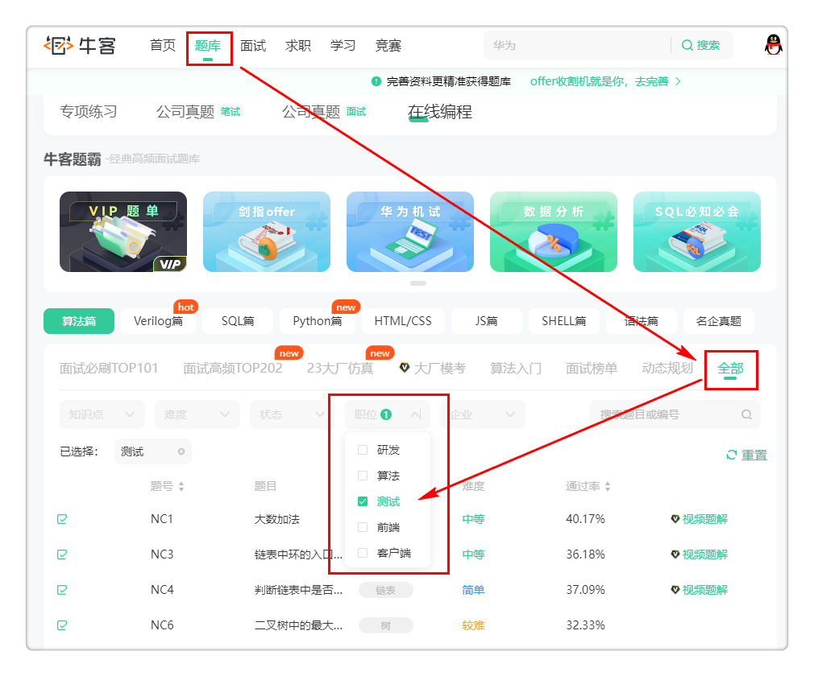

【算法】80道高频算法题Python版
本书作者：测试开发刚哥，文章版权归个人所有，未经授权请勿转载。
80道高频算法题来源于牛客网，这些答案都经过了我验证，可以复制粘贴后提交通过：

掌握这80道题，99%的测试岗位算法考试都能通过。建议收藏后反复练习。本文为Python版本答案，对于Java版本答案，请在电子书《算法挑战》目录中查看。
1、NC1 大数加法：中等
### 计算两个数之和
### @param s string字符串 表示第一个整数
### @param t string字符串 表示第二个整数
### @return string字符串
#
class Solution:
def solve(self , s: str, t: str) -> str:
# write code here
res = ""
i, j, carry = len(s) - 1, len(t) - 1, 0
while i >= 0 or j >= 0:
n1 = int(s[i]) if i >= 0 else 0
n2 = int(t[j]) if j >= 0 else 0
tmp = n1 + n2 + carry
carry = tmp // 10
res = str(tmp % 10) + res
i, j = i - 1, j - 1
return "1" + res if carry else res
2、NC3 链表中环的入口结点：中等
### -*- coding:utf-8 -*-
### class ListNode:
### def __init__(self, x):
### self.val = x
### self.next = None
class Solution:
def EntryNodeOfLoop(self, pHead):
# write code here
slow = self.hasCycle(pHead)
if slow == None:
return None
fast = pHead
while fast != slow:
fast = fast.next
slow = slow.next
return slow
def hasCycle(self, head):
if head == None:
return None
fast = head
slow = head
while fast != None and fast.next != None:
fast = fast.next.next
slow = slow.next
if fast == slow:
return slow
return None
3、NC4 判断链表中是否有环：简单
### class ListNode:
### def __init__(self, x):
### self.val = x
### self.next = None
#
###
### @param head ListNode类
### @return bool布尔型
#
class Solution:
def hasCycle(self , head: ListNode) -> bool:
if not head:
return False
slow = head
fast = head
while fast != None and fast.next != None:
fast = fast.next.next
slow = slow.next
if fast == slow:
return True
return False
4、NC6 二叉树中的最大路径和：困难
这道题的Python答案在牛客网无法通过，在力扣网能通过：
https://leetcode.cn/problems/jC7MId/
### Definition for a binary tree node.
### class TreeNode:
### def __init__(self, val=0, left=None, right=None):
### self.val = val
### self.left = left
### self.right = right
class Solution:
def __init__(self):
self.maxSum = float("-inf")
def maxPathSum(self, root: TreeNode) -> int:
def maxGain(node):
if not node:
return 0
leftGain = max(maxGain(node.left), 0)
rightGain = max(maxGain(node.right), 0)
priceNewpath = node.val + leftGain + rightGain
self.maxSum = max(self.maxSum, priceNewpath)
return node.val + max(leftGain, rightGain)
maxGain(root)
return self.maxSum
5、NC11 将升序数组转化为平衡二叉搜索树：简单
### class TreeNode:
### def __init__(self, x):
### self.val = x
### self.left = None
### self.right = None
#
### 代码中的类名、方法名、参数名已经指定，请勿修改，直接返回方法规定的值即可
#
#
### @param nums int整型一维数组
### @return TreeNode类
#
class Solution:
def sortedArrayToBST(self, nums: List[int]) -> TreeNode:
# write code here
if not nums:
return None
n = len(nums)
k = n // 2
t = TreeNode(nums[k])
if n == 1:
return t
t.left = self.sortedArrayToBST(nums[:k])
t.right = self.sortedArrayToBST(nums[k+1:])
return t
6、NC12 重建二叉树：中等
### class TreeNode:
### def __init__(self, x):
### self.val = x
### self.left = None
### self.right = None
#
### 代码中的类名、方法名、参数名已经指定，请勿修改，直接返回方法规定的值即可
#
###
### @param preOrder int整型一维数组
### @param vinOrder int整型一维数组
### @return TreeNode类
#
class Solution:
def reConstructBinaryTree(self , preOrder: List[int], vinOrder: List[int]) -> TreeNode:
# write code here
if not preOrder:
return None
root = TreeNode(preOrder[0])
tmp = vinOrder.index(preOrder[0])
root.left = self.reConstructBinaryTree(preOrder[1:tmp+1], vinOrder[:tmp])
root.right = self.reConstructBinaryTree(preOrder[tmp+1:], vinOrder[tmp+1:])
return root
7、NC14 按之字形顺序打印二叉树：中等
### class TreeNode:
### def __init__(self, x):
### self.val = x
### self.left = None
### self.right = None
#
### 代码中的类名、方法名、参数名已经指定，请勿修改，直接返回方法规定的值即可
#
###
### @param pRoot TreeNode类
### @return int整型二维数组
#
import queue
class Solution:
def Print(self , pRoot: TreeNode) -> List[List[int]]:
# write code here
head = pRoot
res = []
if not head:
return res
temp = queue.Queue()
temp.put(head)
flag = True
while not temp.empty():
row = []
flag = not flag
n = temp.qsize()
for i in range(n):
p = temp.get()
row.append(p.val)
if p.left:
temp.put(p.left)
if p.right:
temp.put(p.right)
if flag:
row = row[::-1]
res.append(row)
return res
8、NC15 求二叉树的层序遍历：中等
### class TreeNode:
### def __init__(self, x):
### self.val = x
### self.left = None
### self.right = None
#
### 代码中的类名、方法名、参数名已经指定，请勿修改，直接返回方法规定的值即可
#
###
### @param root TreeNode类
### @return int整型二维数组
#
import queue
class Solution:
def levelOrder(self , root: TreeNode) -> List[List[int]]:
# write code here
res = []
if not root:
return res
q = queue.Queue()
q.put(root)
cur = None
while not q.empty():
row = []
n = q.qsize()
for i in range(n):
cur = q.get()
row.append(cur.val)
if cur.left:
q.put(cur.left)
if cur.right:
q.put(cur.right)
res.append(row)
return res
9、NC16 对称的二叉树：简单
### class TreeNode:
### def __init__(self, x):
### self.val = x
### self.left = None
### self.right = None
#
### 代码中的类名、方法名、参数名已经指定，请勿修改，直接返回方法规定的值即可
#
###
### @param pRoot TreeNode类
### @return bool布尔型
#
class Solution:
def recursion(self, root1: TreeNode, root2: TreeNode):
if not root1 and not root2:
return True
if not root1 or not root2 or root1.val != root2.val:
return False
return self.recursion(root1.left, root2.right) and self.recursion(root1.right, root2.left)
def isSymmetrical(self , pRoot: TreeNode) -> bool:
# write code here
return self.recursion(pRoot, pRoot)
10、NC17 最长回文子串：中等
#
### 代码中的类名、方法名、参数名已经指定，请勿修改，直接返回方法规定的值即可
#
###
### @param A string字符串
### @return int整型
#
class Solution:
def func(self, s: str, begin: int, end: int) -> int:
while begin >= 0 and end < len(s) and s[begin] == s[end]:
begin -= 1
end += 1
return end - begin - 1
def getLongestPalindrome(self , A: str) -> int:
# write code here
maxlen = 1
for i in range(len(A) - 1):
maxlen = max(maxlen, max(self.func(A, i, i), self.func(A, i, i + 1)))
return maxlen
11、NC18 顺时针旋转矩阵：中等
#
### 代码中的类名、方法名、参数名已经指定，请勿修改，直接返回方法规定的值即可
#
###
### @param mat int整型二维数组
### @param n int整型
### @return int整型二维数组
#
class Solution:
def rotateMatrix(self , mat: List[List[int]], n: int) -> List[List[int]]:
# write code here
for i in range(n):
for j in range(i):
mat[i][j], mat[j][i] = mat[j][i], mat[i][j]
for i in range(n):
mat[i].reverse()
return mat
12、NC19 连续子数组的最大和：简单
#
### 代码中的类名、方法名、参数名已经指定，请勿修改，直接返回方法规定的值即可
#
###
### @param array int整型一维数组
### @return int整型
#
class Solution:
def FindGreatestSumOfSubArray(self , array: List[int]) -> int:
# write code here
dp = [0 for i in range(len(array))]
dp[0] = array[0]
maxsum = dp[0]
for i in range(1, len(array)):
dp[i] = max(dp[i - 1] + array[i], array[i])
maxsum = max(maxsum, dp[i])
return maxsum
13、NC22 合并两个有序的数组：简单
#
###
### @param A int整型一维数组
### @param B int整型一维数组
### @return void
#
class Solution:
def merge(self , A, m, B, n):
# write code here
i = m - 1
j = n - 1
p = m + n - 1
while i >= 0 and j >= 0:
if A[i] > B[j]:
A[p] = A[i]
p -= 1
i -= 1
else:
A[p] = B[j]
p -= 1
j -= 1
while j >= 0:
A[p] = B[j]
p -= 1
j -= 1
14、NC24 删除有序链表中重复的元素-II：中等
跟简单的区别：要求重复元素全部删除
### class ListNode:
### def __init__(self, x):
### self.val = x
### self.next = None
#
### 代码中的类名、方法名、参数名已经指定，请勿修改，直接返回方法规定的值即可
#
###
### @param head ListNode类
### @return ListNode类
#
class Solution:
def deleteDuplicates(self , head: ListNode) -> ListNode:
# write code here
if not head:
return None
res = ListNode(0)
res.next = head
cur = res
while cur.next and cur.next.next:
if cur.next.val == cur.next.next.val:
temp = cur.next.val
while cur.next != None and cur.next.val == temp:
cur.next = cur.next.next
else:
cur = cur.next
return res.next
15、NC25 删除有序链表中重复的元素-I：简单
跟中等的区别：要求重复元素保留一个
### class ListNode:
### def __init__(self, x):
### self.val = x
### self.next = None
#
### 代码中的类名、方法名、参数名已经指定，请勿修改，直接返回方法规定的值即可
#
#
### @param head ListNode类
### @return ListNode类
#
class Solution:
def deleteDuplicates(self, head: ListNode) -> ListNode:
# write code here
if not head:
return None
cur = head
while cur and cur.next:
if cur.val == cur.next.val:
cur.next = cur.next.next
else:
cur = cur.next
return head
16、NC26 括号生成：中等
#
### 代码中的类名、方法名、参数名已经指定，请勿修改，直接返回方法规定的值即可
#
###
### @param n int整型
### @return string字符串一维数组
#
class Solution:
def recursion(self, left: int, right: int, temp: str, res: List[str], n: int):
if left == n and right == n:
res.append(temp)
return
if left < n:
self.recursion(left + 1, right, temp + "(", res, n)
if right < n and left > right:
self.recursion(left, right + 1, temp + ")", res, n)
def generateParenthesis(self , n: int) -> List[str]:
# write code here
res = list()
temp = str()
self.recursion(0, 0, temp, res, n)
return res
17、NC27 集合的所有子集(一)：中等
#
### 代码中的类名、方法名、参数名已经指定，请勿修改，直接返回方法规定的值即可
#
###
### @param S int整型一维数组
### @return int整型二维数组
#
class Solution:
def subsets(self , S: List[int]) -> List[List[int]]:
# write code here
if not S:
return [[]]
res = []
def dfs(dummy, tmp):
res.append(tmp[:])
for i in range(dummy, len(S)):
tmp.append(S[i])
dfs(i + 1, tmp)
tmp.pop()
dfs(0, [])
return res
18、NC28 最小覆盖子串：困难
#
### 代码中的类名、方法名、参数名已经指定，请勿修改，直接返回方法规定的值即可
#
#
### @param S string字符串
### @param T string字符串
### @return string字符串
#
class Solution:
def minWindow(self, S: str, T: str) -> str:
# write code here
cnt = len(S) + 1
hash = dict()
for i in range(len(T)):
if T[i] in hash:
hash[T[i]] -= 1
else:
hash[T[i]] = -1
slow = 0
fast = 0
left = -1
right = -1
while fast < len(S):
c = S[fast]
if c in hash:
hash[c] += 1
while Solution.check(self, hash):
if cnt > fast - slow + 1:
cnt = fast - slow + 1
left = slow
right = fast
c = S[slow]
if c in hash:
hash[c] -= 1
slow += 1
fast += 1
if left == -1:
return ""
return S[left : right + 1]
def check(self, hash):
for key, value in hash.items():
if value < 0:
return False
return True
19、NC30 缺失的第一个正整数：中等
#
### 代码中的类名、方法名、参数名已经指定，请勿修改，直接返回方法规定的值即可
#
###
### @param nums int整型一维数组
### @return int整型
#
class Solution:
def minNumberDisappeared(self , nums: List[int]) -> int:
# write code here
n = len(nums)
mp = dict()
for i in range(n):
if nums[i] in mp:
mp[nums[i]] += 1
else:
mp[nums[i]] = 1
res = 1
while res in mp:
res += 1
return res
20、NC31 第一个只出现一次的字符：简单
#
### 代码中的类名、方法名、参数名已经指定，请勿修改，直接返回方法规定的值即可
#
###
### @param str string字符串
### @return int整型
#
class Solution:
def FirstNotRepeatingChar(self , str: str) -> int:
# write code here
mp = dict()
for i in str:
if i in mp:
mp[i] += 1
else:
mp[i] = 1
for i in range(len(str)):
if mp[str[i]] == 1:
return i
return -1
21、NC33 合并两个排序的链表：简单
### class ListNode:
### def __init__(self, x):
### self.val = x
### self.next = None
#
### 代码中的类名、方法名、参数名已经指定，请勿修改，直接返回方法规定的值即可
#
###
### @param pHead1 ListNode类
### @param pHead2 ListNode类
### @return ListNode类
#
class Solution:
def Merge(self , pHead1: ListNode, pHead2: ListNode) -> ListNode:
# write code here
if pHead1 == None:
return pHead2
if pHead2 == None:
return pHead1
head = ListNode(0)
cur = head
while pHead1 and pHead2:
if pHead1.val <= pHead2.val:
cur.next = pHead1
pHead1 = pHead1.next
else:
cur.next = pHead2
pHead2 = pHead2.next
cur = cur.next
if pHead1:
cur.next = pHead1
else:
cur.next = pHead2
return head.next
22、NC35 编辑距离(二)：困难
#
### 代码中的类名、方法名、参数名已经指定，请勿修改，直接返回方法规定的值即可
#
### min edit cost
### @param str1 string字符串 the string
### @param str2 string字符串 the string
### @param ic int整型 insert cost
### @param dc int整型 delete cost
### @param rc int整型 replace cost
### @return int整型
#
class Solution:
def minEditCost(self, str1: str, str2: str, ic: int, dc: int, rc: int) -> int:
# write code here
dp = [[0 for _ in range(len(str2) + 1)] for _ in range(len(str1) + 1)]
for i in range(1, len(str2) + 1):
dp[0][i] = dp[0][i - 1] + ic
for i in range(1, len(str1) + 1):
dp[i][0] = dp[i - 1][0] + dc
for i in range(1, len(str1) + 1):
for j in range(1, len(str2) + 1):
if str1[i - 1] == str2[j - 1]:
dp[i][j] = dp[i - 1][j - 1]
else:
dp[i][j] = min(dp[i - 1][j - 1] + rc, dp[i][j - 1] + ic, dp[i - 1][j] + dc)
return dp[-1][-1]
23、NC36 在两个长度相等的排序数组中找到上中位数：中等
#
### 代码中的类名、方法名、参数名已经指定，请勿修改，直接返回方法规定的值即可
#
### find median in two sorted array
### @param arr1 int整型一维数组 the array1
### @param arr2 int整型一维数组 the array2
### @return int整型
#
class Solution:
def findMedianinTwoSortedAray(self , arr1: List[int], arr2: List[int]) -> int:
# write code here
p1, p2 = 0, 0
ans = 0
for i in range(len(arr1)):
if arr1[p1] <= arr2[p2]:
ans = arr1[p1]
p1 += 1
else:
ans = arr2[p2]
p2 += 1
return ans
24、NC37 合并区间：中等
from functools import cmp_to_key
### class Interval:
### def __init__(self, a=0, b=0):
### self.start = a
### self.end = b
#
### 代码中的类名、方法名、参数名已经指定，请勿修改，直接返回方法规定的值即可
#
###
### @param intervals Interval类一维数组
### @return Interval类一维数组
#
class Solution:
def merge(self, intervals: List[Interval]) -> List[Interval]:
# write code here
res = list()
if len(intervals) == 0:
return res
intervals.sort(key=cmp_to_key(lambda a, b: a.start - b.start))
res.append(intervals[0])
for i in range(len(intervals)):
if intervals[i].start <= res[-1].end:
res[-1].end = max(res[-1].end, intervals[i].end)
else:
res.append(intervals[i])
return res
25、NC40 链表相加(二)：中等
### class ListNode:
### def __init__(self, x):
### self.val = x
### self.next = None
#
### 代码中的类名、方法名、参数名已经指定，请勿修改，直接返回方法规定的值即可
#
#
### @param head1 ListNode类
### @param head2 ListNode类
### @return ListNode类
#
class Solution:
# 反转链表
def reverseList(self, pHead: ListNode):
if pHead == None:
return None
cur = pHead
pre = None
while cur:
# 断开链表，要记录后续一个
temp = cur.next
# 当前的next指向前一个
cur.next = pre
# 前一个更新为当前
pre = cur
# 当前更新为刚刚记录的后一个
cur = temp
return pre
def addInList(self, head1: ListNode, head2: ListNode) -> ListNode:
# 任意一个链表为空，返回另一个
if head1 == None:
return head2
if head2 == None:
return head1
# 反转两个链表
head1 = self.reverseList(head1)
head2 = self.reverseList(head2)
# 添加表头
res = ListNode(-1)
head = res
# 进位符号
carry = 0
# 只要某个链表还有或者进位还有
while head1 != None or head2 != None or carry != 0:
# 链表不为空则取其值
val1 = 0 if head1 == None else head1.val
val2 = 0 if head2 == None else head2.val
# 相加
temp = val1 + val2 + carry
# 获取进位
carry = (int)(temp / 10)
temp %= 10
# 添加元素
head.next = ListNode(temp)
head = head.next
# 移动下一个
if head1:
head1 = head1.next
if head2:
head2 = head2.next
# 结果反转回来
return self.reverseList(res.next)
26、NC41 最长无重复子数组：中等
#
### 代码中的类名、方法名、参数名已经指定，请勿修改，直接返回方法规定的值即可
#
#
### @param arr int整型一维数组 the array
### @return int整型
#
class Solution:
def maxLength(self, arr: List[int]) -> int:
# 哈希表记录窗口内非重复的数字
mp = dict()
res = 0
left = 0
# 设置窗口左右边界
for right in range(len(arr)):
if arr[right] in mp:
# 窗口右移进入哈希表统计出现次数
mp[arr[right]] += 1
else:
mp[arr[right]] = 1
# 出现次数大于1，则窗口内有重复
while mp[arr[right]] > 1:
# 窗口左移，同时减去该数字的出现次数
mp[arr[left]] -= 1
left += 1
# 维护子数组长度最大值
res = max(res, right - left + 1)
return res
27、NC42 有重复项数字的全排列：中等
#
### 代码中的类名、方法名、参数名已经指定，请勿修改，直接返回方法规定的值即可
#
#
### @param num int整型一维数组
### @return int整型二维数组
#
#
### 代码中的类名、方法名、参数名已经指定，请勿修改，直接返回方法规定的值即可
#
#
### @param arr int整型一维数组 the array
### @return int整型
#
class Solution:
def recursion(
self, res: List[List[int]], num: List[int], temp: List[int], vis: List[int]
):
# 临时数组满了加入输出
if len(temp) == len(num):
res.append(temp.copy())
return
# 遍历所有元素选取一个加入
for i in range(len(num)):
# 如果该元素已经被加入了则不需要再加入了
if vis[i] == 1:
continue
if i > 0 and num[i - 1] == num[i] and not vis[i - 1]:
# 当前的元素num[i]与同一层的前一个元素num[i-1]相同且num[i-1]已经用过了
continue
# 标记为使用过
vis[i] = 1
# 加入数组
temp.append(num[i])
self.recursion(res, num, temp, vis)
# 回溯
vis[i] = 0
temp.pop()
def permuteUnique(self, num: List[int]) -> List[List[int]]:
# 先按字典序排序
num.sort()
# 标记每个位置的元素是否被使用过
vis = [0] * len(num)
res = list(list())
temp = list()
# 递归获取
self.recursion(res, num, temp, vis)
return res
28、NC44 通配符匹配：困难
#
### 代码中的类名、方法名、参数名已经指定，请勿修改，直接返回方法规定的值即可
#
###
### @param s string字符串
### @param p string字符串
### @return bool布尔型
#
class Solution:
def isMatch(self , s: str, p: str) -> bool:
# write code here
row = len(s)
col = len(p)
dp = [[False for _ in range(col + 1)] for _ in range(row + 1)]
dp[0][0] = True
for j in range(1, col + 1):
if dp[0][j - 1]:
if p[j - 1] == "*":
dp[0][j] = True
else:
break
for i in range(0, row):
for j in range(0, col):
if p[j] == s[i] or p[j] == "?":
dp[i + 1][j + 1] = dp[i][j]
elif p[j] == "*":
dp[i + 1][j + 1] = dp[i][j] or dp[i + 1][j] or dp[i][j + 1]
return dp[row][col]
29、NC45 实现二叉树先序，中序和后序遍历：中等
### class TreeNode:
### def __init__(self, x):
### self.val = x
### self.left = None
### self.right = None
#
### 代码中的类名、方法名、参数名已经指定，请勿修改，直接返回方法规定的值即可
#
#
### @param root TreeNode类 the root of binary tree
### @return int整型二维数组
#
class Solution:
def threeOrders(self, root: TreeNode) -> List[List[int]]:
# write code here
self.res = [[], [], []]
self.dfs(root)
return self.res
def dfs(self, root):
if not root:
return
self.res[0].append(root.val)
self.dfs(root.left)
self.res[1].append(root.val)
self.dfs(root.right)
self.res[2].append(root.val)
return
30、NC46 加起来和为目标值的组合(二)：中等
#
### 代码中的类名、方法名、参数名已经指定，请勿修改，直接返回方法规定的值即可
#
#
### @param num int整型一维数组
### @param target int整型
### @return int整型二维数组
#
class Solution:
def combinationSum2(self, num: List[int], target: int) -> List[List[int]]:
# write code here
"""
回溯法
1.去重（好好理解一下）
2.剪枝（不剪枝会超时）
"""
result = []
if not num:
return result
new_num = sorted(num)
self.backtracking(new_num, target, 0, 0, [], result)
return result
def backtracking(self, num, target, cur, begin, arr, result):
"""
num: 入参数组列表
target：目标值
cur：当前值
begin：开始指针
arr：临时存储数组
result：满足条件的组合
"""
if cur >= target:
if cur == target:
result.append(list(arr))
return result
for i in range(begin, len(num)):
if i > begin and num[i] == num[i - 1]: # 去重
continue
# 减枝
arr.append(num[i])
self.backtracking(num, target, cur + num[i], i + 1, arr, result)
arr.pop(-1)
return result
31、NC49 最长的括号子串：困难
#
### 代码中的类名、方法名、参数名已经指定，请勿修改，直接返回方法规定的值即可
#
#
### @param s string字符串
### @return int整型
#
class Solution:
def longestValidParentheses(self, s: str) -> int:
res = 0
# 记录上一次连续括号结束的位置
start = -1
st = []
for i in range(len(s)):
# 左括号入栈
if s[i] == "(":
st.append(i)
# 右括号
else:
# 如果右括号时栈为空，不合法，设置为结束位置
if len(st) == 0:
start = i
else:
# 弹出左括号
st.pop()
# 栈中还有左括号，说明右括号不够，减去栈顶位置就是长度
if len(st) != 0:
res = max(res, i - st[-1])
# 栈中没有括号，说明左右括号行号，减去上一次结束的位置就是长度
else:
res = max(res, i - start)
return res
32、NC50 链表中的节点每k个一组翻转：中等
### class ListNode:
### def __init__(self, x):
### self.val = x
### self.next = None
#
### 代码中的类名、方法名、参数名已经指定，请勿修改，直接返回方法规定的值即可
#
#
### @param head ListNode类
### @param k int整型
### @return ListNode类
#
class Solution:
def reverseKGroup(self, head: ListNode, k: int) -> ListNode:
# 找到每次翻转的尾部
tail = head
# 遍历k次到尾部
for i in range(0, k):
# 如果不足k到了链表尾，直接返回，不翻转
if tail == None:
return head
tail = tail.next
# 翻转时需要的前序和当前节点
pre = None
cur = head
# 在到达当前段尾节点前
while cur != tail:
# 翻转
temp = cur.next
cur.next = pre
pre = cur
cur = temp
# 当前尾指向下一段要翻转的链表
head.next = self.reverseKGroup(tail, k)
return pre
33、NC51 合并k个已排序的链表：困难
### class ListNode:
### def __init__(self, x):
### self.val = x
### self.next = None
#
### 代码中的类名、方法名、参数名已经指定，请勿修改，直接返回方法规定的值即可
#
#
### @param lists ListNode类一维数组
### @return ListNode类
#
import sys
### 设置递归深度
sys.setrecursionlimit(100000)
class Solution:
# 两个有序链表合并函数
def Merge2(self, pHead1: ListNode, pHead2: ListNode) -> ListNode:
# 一个已经为空了，直接返回另一个
if pHead1 == None:
return pHead2
if pHead2 == None:
return pHead1
# 加一个表头
head = ListNode(0)
cur = head
# 两个链表都要不为空
while pHead1 and pHead2:
# 取较小值的节点
if pHead1.val <= pHead2.val:
cur.next = pHead1
# 只移动取值的指针
pHead1 = pHead1.next
else:
cur.next = pHead2
# 只移动取值的指针
pHead2 = pHead2.next
# 指针后移
cur = cur.next
# 哪个链表还有剩，直接连在后面
if pHead1:
cur.next = pHead1
else:
cur.next = pHead2
# 返回值去掉表头
return head.next
# 划分合并区间函数
def divideMerge(self, lists: List[ListNode], left: int, right: int) -> ListNode:
if left > right:
return None
# 中间一个的情况
elif left == right:
return lists[left]
# 从中间分成两段，再将合并好的两段合并
mid = (int)((left + right) / 2)
return self.Merge2(
self.divideMerge(lists, left, mid), self.divideMerge(lists, mid + 1, right)
)
def mergeKLists(self, lists: List[ListNode]) -> ListNode:
# k个链表归并排序
return self.divideMerge(lists, 0, len(lists) - 1)
34、NC52 有效括号序列：简单
#
### 代码中的类名、方法名、参数名已经指定，请勿修改，直接返回方法规定的值即可
#
#
### @param s string字符串
### @return bool布尔型
#
class Solution:
def isValid(self, s: str) -> bool:
# 辅助栈
st = []
# 遍历字符串
for i, char in enumerate(s):
# 遇到左小括号
if char == "(":
# 期待遇到右小括号
st.append(")")
# 遇到左中括号
elif char == "[":
# 期待遇到右中括号
st.append("]")
# 遇到左打括号
elif char == "{":
# 期待遇到右打括号
st.append("}")
# 必须有左括号的情况下才能遇到右括号
elif len(st) == 0:
return False
# 右括号匹配则弹出
elif st[-1] == char:
st.pop()
# 栈中是否还有元素
return len(st) == 0
35、NC53 删除链表的倒数第n个节点：中等
### class ListNode:
### def __init__(self, x):
### self.val = x
### self.next = None
#
### 代码中的类名、方法名、参数名已经指定，请勿修改，直接返回方法规定的值即可
#
#
### @param head ListNode类
### @param n int整型
### @return ListNode类
#
class Solution:
def removeNthFromEnd(self, head: ListNode, n: int) -> ListNode:
# 添加表头
res = ListNode(-1)
res.next = head
# 当前节点
cur = head
# 前序节点
pre = res
fast = head
# 快指针先行n步
while n:
fast = fast.next
n = n - 1
# 快慢指针同步，快指针到达末尾，慢指针就到了倒数第n个位置
while fast:
fast = fast.next
pre = cur
cur = cur.next
# 删除该位置的节点
pre.next = cur.next
# 返回去掉头
return res.next
36、NC54 三数之和：中等
#
### 代码中的类名、方法名、参数名已经指定，请勿修改，直接返回方法规定的值即可
#
#
### @param num int整型一维数组
### @return int整型二维数组
#
class Solution:
def threeSum(self, num: List[int]) -> List[List[int]]:
res = list(list())
n = len(num)
# 不够三元组
if n < 3:
return res
# 排序
num.sort()
for i in range(n - 2):
if i != 0 and num[i] == num[i - 1]:
continue
# 后续的收尾双指针
left = i + 1
right = n - 1
# 设置当前数的负值为目标
target = -num[i]
while left < right:
# 双指针指向的二值相加为目标，则可以与num[i]组成0
if num[left] + num[right] == target:
res.append([num[i], num[left], num[right]])
while left + 1 < right and num[left] == num[left + 1]:
# 去重
left += 1
while right - 1 > left and num[right] == num[right - 1]:
# 去重
right -= 1
# 双指针向中间收缩
left += 1
right -= 1
# 双指针指向的二值相加大于目标，右指针向左
elif num[left] + num[right] > target:
right -= 1
# 双指针指向的二值相加小于目标，左指针向右
else:
left += 1
return res
37、NC55 最长公共前缀：简单
#
### 代码中的类名、方法名、参数名已经指定，请勿修改，直接返回方法规定的值即可
#
#
### @param strs string字符串一维数组
### @return string字符串
#
class Solution:
def longestCommonPrefix(self, strs: List[str]) -> str:
n = len(strs)
# 空字符串数组
if n == 0:
return ""
# 遍历第一个字符串的长度
for i in range(len(strs[0])):
temp = strs[0][i]
# 遍历后续的字符串
for j in range(1, n):
# 比较每个字符串该位置是否和第一个相同
if i == len(strs[j]) or strs[j][i] != temp:
# 不相同则结束
return strs[0][0:i]
# 后续字符串有整个字一个字符串的前缀
return strs[0]
38、NC57 反转数字：简单
#
### 代码中的类名、方法名、参数名已经指定，请勿修改，直接返回方法规定的值即可
#
#
### @param x int整型
### @return int整型
#
class Solution:
def reverse(self, x):
# write code here
x = str(x)
if x[0] == "-":
a = int("-" + x[1:][::-1])
else:
a = int(x[::-1])
return a if -2**31 < a < 2**31-1 else 0
39、NC60 判断一棵二叉树是否为搜索二叉树和完全二叉树：中等
### class TreeNode:
### def __init__(self, x):
### self.val = x
### self.left = None
### self.right = None
#
### 代码中的类名、方法名、参数名已经指定，请勿修改，直接返回方法规定的值即可
#
#
### @param root TreeNode类 the root
### @return bool布尔型一维数组
#
class Solution:
def judgeIt(self, root: TreeNode) -> List[bool]:
from dataclasses import dataclass
@dataclass
class Info:
mx: int # 整棵树的最大值
mi: int # 整棵树的最小值
height: int # 树的高度
is_bst: bool # 是否搜索二叉树
is_full: bool # 是否满二叉树
is_cbt: bool # 是否完全二叉树
def dfs(x):
if not x:
return Info(float("-inf"), float("inf"), 0, True, True, True)
l, r = dfs(x.left), dfs(x.right)
# 使用左右子树的信息得到当前节点的信息
mx = max(x.val, r.mx)
mi = min(x.val, l.mi)
height = max(l.height, r.height) + 1
is_bst = l.is_bst and r.is_bst and l.mx < x.val < r.mi
is_full = l.is_full and r.is_full and l.height == r.height
is_cbt = (
is_full
or l.is_full
and r.is_full
and l.height - 1 == r.height
or l.is_full
and r.is_cbt
and l.height == r.height
or l.is_cbt
and r.is_full
and l.height - 1 == r.height
)
return Info(mx, mi, height, is_bst, is_full, is_cbt)
info = dfs(root)
return info.is_bst, info.is_cbt
40、NC61 两数之和：简单
#
### 代码中的类名、方法名、参数名已经指定，请勿修改，直接返回方法规定的值即可
#
#
### @param numbers int整型一维数组
### @param target int整型
### @return int整型一维数组
#
class Solution:
def twoSum(self, numbers: List[int], target: int) -> List[int]:
res = []
# 创建哈希表,两元组分别表示值、下标
hash = dict()
# 在哈希表中查找target-numbers[i]
for i in range(len(numbers)):
temp = target - numbers[i]
# 若是没找到，将此信息计入哈希表
if temp not in hash:
hash[numbers[i]] = i
else:
# 哈希表中记录的是之前的数字，所以该索引比当前小
res.append(hash[temp] + 1)
res.append(i + 1)
break
return res
41、NC62 判断是不是平衡二叉树：简单
### class TreeNode:
### def __init__(self, x):
### self.val = x
### self.left = None
### self.right = None
#
### 代码中的类名、方法名、参数名已经指定，请勿修改，直接返回方法规定的值即可
#
#
### @param pRoot TreeNode类
### @return bool布尔型
#
class Solution:
# 计算该子树深度函数
def deep(self, root: TreeNode):
if not root:
return 0
# 递归算左右子树的深度
left = self.deep(root.left)
right = self.deep(root.right)
# 子树最大深度加上自己
return left + 1 if left > right else right + 1
def IsBalanced_Solution(self, pRoot: TreeNode) -> bool:
# 空树为平衡二叉树
if not pRoot:
return True
left = self.deep(pRoot.left)
right = self.deep(pRoot.right)
# 左子树深度减去右子树相差绝对值大于1
if left - right > 1 or left - right < -1:
return False
# 同时，左右子树还必须是平衡的
return self.IsBalanced_Solution(pRoot.left) and self.IsBalanced_Solution(
pRoot.right
)
42、NC63 扑克牌顺子：简单
#
### 代码中的类名、方法名、参数名已经指定，请勿修改，直接返回方法规定的值即可
#
#
### @param numbers int整型一维数组
### @return bool布尔型
#
class Solution:
def IsContinuous(self, numbers: List[int]) -> bool:
hash = dict()
# 设置顺子上下界
max = 0
min = 13
# 遍历牌
for i in range(len(numbers)):
if numbers[i] > 0:
# 顺子不能重复
if numbers[i] in hash:
return False
else:
# 将新牌加入哈希表
hash[numbers[i]] = i
# 更新上下界
if numbers[i] >= max:
max = numbers[i]
if numbers[i] <= min:
min = numbers[i]
# 如果两张牌大于等于5，剩下三张牌无论如何也补不齐
if (max - min) >= 5:
return False
else:
return True
43、NC65 斐波那契数列：简单
#
### 代码中的类名、方法名、参数名已经指定，请勿修改，直接返回方法规定的值即可
#
#
### @param n int整型
### @return int整型
#
class Solution:
def Fibonacci(self, n):
# write code here
# 斐波拉契数的边界条件： F(0)=0 和 F(1)=1
if n < 2:
return n
else:
a, b = 0, 1
for i in range(n - 1):
a, b = b, a + b # 状态转移方程，每次滚动更新数组
return b
44、NC66 两个链表的第一个公共结点：简单
### class ListNode:
### def __init__(self, x):
### self.val = x
### self.next = None
#
#
### @param pHead1 ListNode类
### @param pHead2 ListNode类
### @return ListNode类
#
class Solution:
def FindFirstCommonNode(self, pHead1, pHead2):
# write code here
# 首先判断两个链表是否为空
if pHead1 is None or pHead2 is None:
return None
# 定义链表1 的集合
set_A = set()
node1, node2 = pHead1, pHead2 # 定义两个节点
# 遍历链表 1 ，把每个节点加入集合中
while node1:
set_A.add(node1)
node1 = node1.next
# 遍历链表2 看当前节点是否在 集合中；如果存在，当前节点就是要找的第一个公共节点；否则继续比较下一个节点。
# 这里还要注意，如果遍历完链表 B，发现所有节点都不在集合中，则说明两个链表不相交，返回None。
while node2:
if node2 in set_A:
return node2
node2 = node2.next
return None
45、NC68 跳台阶：简单
#
### 代码中的类名、方法名、参数名已经指定，请勿修改，直接返回方法规定的值即可
#
#
### @param number int整型
### @return int整型
#
class Solution:
def jumpFloor(self, number: int) -> int:
# 从0开始，第0项是1，第一项是1
if number <= 1:
return 1
res = 0
a = 1
b = 1
# 初始化的时候把a=1，b=1
for i in range(2, number + 1):
# 第三项开始是前两项的和,然后保留最新的两项，更新数据相加
res = a + b
a = b
b = res
return res
46、NC70 单链表的排序：中等
### class ListNode:
### def __init__(self, x):
### self.val = x
### self.next = None
#
### 代码中的类名、方法名、参数名已经指定，请勿修改，直接返回方法规定的值即可
#
#
### @param head ListNode类 the head node
### @return ListNode类
#
class Solution:
# 合并两段有序链表
def merge(self, pHead1: ListNode, pHead2: ListNode):
# 一个已经为空了，直接返回另一个
if pHead1 == None:
return pHead2
if pHead2 == None:
return pHead1
# 加一个表头
head = ListNode(0)
cur = head
# 两个链表都要不为空
while pHead1 and pHead2:
# 取较小值的节点
if pHead1.val <= pHead2.val:
cur.next = pHead1
# 只移动取值的指针
pHead1 = pHead1.next
else:
cur.next = pHead2
# 只移动取值的指针
pHead2 = pHead2.next
# 指针后移
cur = cur.next
# 哪个链表还有剩，直接连在后面
if pHead1:
cur.next = pHead1
else:
cur.next = pHead2
# 返回值去掉表头
return head.next
def sortInList(self, head):
# 链表为空或者只有一个元素，直接就是有序的
if head == None or head.next == None:
return head
left = head
mid = head.next
right = head.next.next
# 右边的指针到达末尾时，中间的指针指向该段链表的中间
while right and right.next:
left = left.next
mid = mid.next
right = right.next.next
# 左边指针指向左段的左右一个节点，从这里断开
left.next = None
# 分成两段排序，合并排好序的两段
return self.merge(self.sortInList(head), self.sortInList(mid))
47、NC72 二叉树的镜像：简单
### class TreeNode:
### def __init__(self, x):
### self.val = x
### self.left = None
### self.right = None
#
### 代码中的类名、方法名、参数名已经指定，请勿修改，直接返回方法规定的值即可
#
#
### @param pRoot TreeNode类
### @return TreeNode类
#
class Solution:
def Mirror(self, pRoot: TreeNode) -> TreeNode:
# 空树返回
if not pRoot:
return None
# 先递归子树
left = self.Mirror(pRoot.left)
right = self.Mirror(pRoot.right)
# 交换
pRoot.left = right
pRoot.right = left
return pRoot
48、NC73 数组中出现次数超过一半的数字：简单
#
### 代码中的类名、方法名、参数名已经指定，请勿修改，直接返回方法规定的值即可
#
#
### @param numbers int整型一维数组
### @return int整型
#
class Solution:
def MoreThanHalfNum_Solution(self, numbers: List[int]) -> int:
# 无序哈希表统计每个数字出现的次数
mp = dict()
# 遍历数组
for i in range(len(numbers)):
if numbers[i] in mp:
# 哈希表中相应数字个数加1
mp[numbers[i]] += 1
else:
mp[numbers[i]] = 1
# 一旦有个数大于长度一半的情况即可返回
if mp[numbers[i]] > (int)(len(numbers) / 2):
return numbers[i]
return 0
49、NC74 数字在升序数组中出现的次数：简单
#
### 代码中的类名、方法名、参数名已经指定，请勿修改，直接返回方法规定的值即可
#
#
### @param nums int整型一维数组
### @param k int整型
### @return int整型
#
class Solution:
# 二分查找
def bisearch(self, data: List[int], k: float) -> int:
left = 0
right = len(data) - 1
# 二分左右界
while left <= right:
mid = (left + right) // 2
if data[mid] < k:
left = mid + 1
elif data[mid] > k:
right = mid - 1
return left
def GetNumberOfK(self, data: List[int], k: int) -> int:
# 分别查找k+0.5和k-0.5应该出现的位置，中间的部分就全是k
return self.bisearch(data, k + 0.5) - self.bisearch(data, k - 0.5)
50、NC76 用两个栈实现队列：简单
### -*- coding:utf-8 -*-
class Solution:
def __init__(self):
self.stack1 = []
self.stack2 = []
def push(self, node):
self.stack1.append(node)
def pop(self):
# 将第一个栈中内容弹出放入第二个栈中
while self.stack1:
self.stack2.append(self.stack1.pop())
# 第二个栈栈顶就是最先进来的元素，即队首
res = self.stack2.pop()
# 再将第二个栈的元素放回第一个栈
while self.stack2:
self.stack1.append(self.stack2.pop())
return res
51、NC78 反转链表：简单
### class ListNode:
### def __init__(self, x):
### self.val = x
### self.next = None
#
### 代码中的类名、方法名、参数名已经指定，请勿修改，直接返回方法规定的值即可
#
#
### @param head ListNode类
### @return ListNode类
#
class Solution:
# 返回ListNode
def ReverseList(self, pHead):
# write code here
pre = None
head = pHead
while head:
temp = head.next
head.next = pre
pre = head
head = temp
return pre
52、NC82 滑动窗口的最大值：困难
#
### 代码中的类名、方法名、参数名已经指定，请勿修改，直接返回方法规定的值即可
#
#
### @param num int整型一维数组
### @param size int整型
### @return int整型一维数组
#
class Solution:
def maxInWindows(self, num: List[int], size: int) -> List[int]:
res = []
# 窗口大于数组长度的时候，返回空
if size <= len(num) and size != 0:
from collections import deque
# 双向队列
dq = deque()
# 先遍历一个窗口
for i in range(size):
# 去掉比自己先进队列的小于自己的值
while len(dq) != 0 and num[dq[-1]] < num[i]:
dq.pop()
dq.append(i)
# 遍历后续数组元素
for i in range(size, len(num)):
res.append(num[dq[0]])
while len(dq) != 0 and dq[0] < (i - size + 1):
# 弹出窗口移走后的值
dq.popleft()
# 加入新的值前，去掉比自己先进队列的小于自己的值
while len(dq) != 0 and num[dq[-1]] < num[i]:
dq.pop()
dq.append(i)
res.append(num[dq[0]])
return res
53、NC86 矩阵元素查找：中等
#
### 代码中的类名、方法名、参数名已经指定，请勿修改，直接返回方法规定的值即可
#
#
### @param mat int整型二维数组
### @param n int整型
### @param m int整型
### @param x int整型
### @return int整型一维数组
#
class Solution:
def findElement(self, mat: List[List[int]], n: int, m: int, x: int) -> List[int]:
# write code here
i = n - 1
j = 0
while i >= 0 and j < m:
if mat[i][j] == x:
return [i, j]
elif x < mat[i][j]:
i -= 1
elif x > mat[i][j]:
j += 1
54、NC89 字符串变形：简单
#
### 代码中的类名、方法名、参数名已经指定，请勿修改，直接返回方法规定的值即可
#
#
### @param s string字符串
### @param n int整型
### @return string字符串
#
class Solution:
def trans(self, s: str, n: int) -> str:
if n == 0:
return s
res = ""
for i in range(n):
# 大小写转换
if s[i] <= "Z" and s[i] >= "A":
res += chr(ord(s[i]) - ord("A") + ord("a"))
elif s[i] >= "a" and s[i] <= "z":
res += chr(ord(s[i]) - ord("a") + ord("A"))
else:
# 空格直接复制
res += s[i]
# 单词反序
res = list(res.split(" "))[::-1]
print(res)
return " ".join(res)
55、NC91 最长上升子序列(三)：中等
#
### 代码中的类名、方法名、参数名已经指定，请勿修改，直接返回方法规定的值即可
#
### retrun the longest increasing subsequence
### @param arr int整型一维数组 the array
### @return int整型一维数组
#
import bisect
class Solution:
def LIS(self, arr):
# write code here
arrLen = len(arr)
if arrLen < 2:
return arr
ansArr = [arr[0]] # 记录某个数字结尾时最长的最长递增子序列，初始化第一个数字
maxLen = [1] # 下标i时，最长的递增子序列长度，初始化1
for a in arr[1:]:
if a > ansArr[-1]: # 当前数字大于ansArr最后一个数字，子数组保持递增
ansArr.append(a)
maxLen.append(len(ansArr))
# 当前数字小于等于ansArr最后一个数字，二分查找ansArr中第一个比当前数字大的下标pos
# 替换ansArr中下标pos的数字为当前数字，更新maxLen，记录当前最长递增子序列长度为：pos + 1(下标+1)
else:
pos = bisect.bisect_left(ansArr, a)
ansArr[pos] = a
maxLen.append(pos + 1)
# 找到的ansArr不一定是最终结果，[2,1,5,3,6,4,8,9,7] - > [1, 3, 4, 7, 9] (不是最终结果)
# [1, 1, 2, 2, 3, 3, 4, 5, 4] 从后往前遍历maxLen,依次找到等于len(arrLen)对应的 arr[i]
ansLen = len(ansArr)
for i in range(arrLen - 1, -1, -1):
if maxLen[i] == ansLen:
ansArr[ansLen - 1] = arr[i]
ansLen -= 1
return ansArr
56、NC92 最长公共子序列(二)：中等
#
### 代码中的类名、方法名、参数名已经指定，请勿修改，直接返回方法规定的值即可
#
### longest common subsequence
### @param s1 string字符串 the string
### @param s2 string字符串 the string
### @return string字符串
#
import sys
### 设置递归深度
sys.setrecursionlimit(100000)
class Solution:
def __init__(self):
self.x = ""
self.y = ""
# 获取最长公共子序列
def ans(self, i: int, j: int, b: List[List[int]]):
res = ""
# 递归终止条件
if i == 0 or j == 0:
return res
# 根据方向，往前递归，然后添加本级字符
if b[i][j] == 1:
res = res + self.ans(i - 1, j - 1, b)
res = res + self.x[i - 1]
elif b[i][j] == 2:
res = res + self.ans(i - 1, j, b)
elif b[i][j] == 3:
res = res + self.ans(i, j - 1, b)
return res
def LCS(self, s1: str, s2: str) -> str:
# 特殊情况
if s1 is None or s2 is None:
return "-1"
len1 = len(s1)
len2 = len(s2)
self.x = s1
self.y = s2
# dp[i][j]表示第一个字符串到第i位，第二个字符串到第j位为止的最长公共子序列长度
dp = [[0] * (len2 + 1) for i in range(len1 + 1)]
# 动态规划数组相加的方向
b = [[0] * (len2 + 1) for i in range(len1 + 1)]
# 遍历两个字符串每个位置求的最长长度
for i in range(1, len1 + 1):
for j in range(1, len2 + 1):
# 遇到两个字符相等
if s1[i - 1] == s2[j - 1]:
# 考虑由二者都向前一位
dp[i][j] = dp[i - 1][j - 1] + 1
# 来自于左上方
b[i][j] = 1
# 遇到的两个字符不同
# 左边的选择更大，即第一个字符串后退一位
elif dp[i - 1][j] > dp[i][j - 1]:
dp[i][j] = dp[i - 1][j]
# 来自于左方
b[i][j] = 2
# 右边的选择更大，即第二个字符串后退一位
else:
dp[i][j] = dp[i][j - 1]
# 来自于上方
b[i][j] = 3
# 获取答案字符串
res = self.ans(len1, len2, b)
# 检查答案是否位空
if res is None or res == "":
return "-1"
else:
return res
57、NC93 设计LRU缓存结构：困难
from collections import OrderedDict
class Solution:
def __init__(self, capacity: int):
# write code here
self.size = capacity
self.lru_cache = OrderedDict()
def get(self, key: int) -> int:
# write code here
if key in self.lru_cache:
self.lru_cache.move_to_end(key)
return self.lru_cache.get(key, -1)
def set(self, key: int, value: int) -> None:
# write code here
if key in self.lru_cache:
del self.lru_cache[key]
self.lru_cache[key] = value
if len(self.lru_cache) > self.size:
self.lru_cache.popitem(last=False)
58、NC94 设计LFU缓存结构：困难
这道题放弃吧，绝对不会考。
59、NC95 数组中的最长连续子序列：困难
#
### 代码中的类名、方法名、参数名已经指定，请勿修改，直接返回方法规定的值即可
#
### max increasing subsequence
### @param arr int整型一维数组 the array
### @return int整型
#
class Solution:
def MLS(self, arr: List[int]) -> int:
# write code here
nums = set(arr)
res = 0
for i in nums:
if i - 1 not in nums:
j = i + 1
while j in nums:
j += 1
res = max(res, j - i)
return res
60、NC96 判断一个链表是否为回文结构：简单
### class ListNode:
### def __init__(self, x):
### self.val = x
### self.next = None
#
### 代码中的类名、方法名、参数名已经指定，请勿修改，直接返回方法规定的值即可
#
#
### @param head ListNode类 the head
### @return bool布尔型
#
class Solution:
def isPail(self, head: ListNode) -> bool:
nums = []
# 将链表元素取出一次放入数组
while head:
nums.append(head.val)
head = head.next
temp = nums.copy()
# 准备一个数组承接翻转之后的数组
temp.reverse()
for i in range(len(nums)):
# 正向遍历与反向遍历相同
if nums[i] != temp[i]:
return False
return True
61、NC98 判断t1树中是否有与t2树完全相同的子树：简单
### class TreeNode:
### def __init__(self, x):
### self.val = x
### self.left = None
### self.right = None
#
### 代码中的类名、方法名、参数名已经指定，请勿修改，直接返回方法规定的值即可
#
#
### @param root1 TreeNode类
### @param root2 TreeNode类
### @return bool布尔型
#
class Solution:
def isContains(self, root1, root2):
# write code here
if not root1 and not root2:
return True
if not root1 or not root2:
return False
if root1.val == root2.val:
return self.isContains(root1.left, root2.left) and self.isContains(
root1.right, root2.right
)
return self.isContains(root1.left, root2) or self.isContains(root1.right, root2)
62、NC100 把字符串转换成整数(atoi)：中等
#
### 代码中的类名、方法名、参数名已经指定，请勿修改，直接返回方法规定的值即可
#
#
### @param s string字符串
### @return int整型
#
class Solution:
def StrToInt(self, s: str) -> int:
res = 0
index = 0
# 去掉前导空格
s = s.strip()
# 去掉空格就什么都没有了
n = len(s)
if s == "":
return 0
sign = 1
# 处理第一个符号是正负号的情况
if s[index] == "+":
index += 1
elif s[index] == "-":
index += 1
sign = -1
# 去掉符号就什么都没有了
if index == n:
return 0
while index < n:
c = s[index]
# 后续非法字符，截断
if c < "0" or c > "9":
break
# 转数字
res = res * 10 + sign * ((int)(c) - (int)("0"))
index += 1
# 输出处理越界
return min(max(res, -(2 ** 31)), 2 ** 31 - 1)
63、NC103 反转字符串：简单
#
### 代码中的类名、方法名、参数名已经指定，请勿修改，直接返回方法规定的值即可
#
### 反转字符串
### @param str string字符串
### @return string字符串
#
class Solution:
def solve(self, str: str) -> str:
# 左右双指针
left = 0
right = len(str) - 1
# 两指针往中间靠
while left < right:
l_s = list(str)
temp = l_s[left]
l_s[left] = l_s[right]
# 交换两边字符
l_s[right] = temp
str = "".join(l_s)
left += 1
right -= 1
return str
64、NC105 二分查找-II：中等
#
### 代码中的类名、方法名、参数名已经指定，请勿修改，直接返回方法规定的值即可
#
### 如果目标值存在返回下标，否则返回 -1
### @param nums int整型一维数组
### @param target int整型
### @return int整型
#
class Solution:
def search(self, nums: List[int], target: int) -> int:
# write code here
front, end = 0, len(nums) - 1
while front <= end:
temp = (front + end) // 2
if nums[temp] == target:
temp1 = temp
while temp1 >= 0 and nums[temp1] == target:
temp1 -= 1
return temp1 + 1
elif nums[temp] > target:
end = temp - 1
else:
front = temp + 1
else:
return -1
65、NC106 三个数的最大乘积：简单
#
### 代码中的类名、方法名、参数名已经指定，请勿修改，直接返回方法规定的值即可
#
### 最大乘积
### @param A int整型一维数组
### @return long长整型
#
class Solution:
def solve(self, A: List[int]) -> int:
# write code here
A.sort()
a1 = A[0] * A[1] * A[-1]
a2 = A[-1] * A[-2] * A[-3]
if a1 >= a2:
return a1
else:
return a2
66、NC107 寻找峰值：中等
#
### 代码中的类名、方法名、参数名已经指定，请勿修改，直接返回方法规定的值即可
#
#
### @param nums int整型一维数组
### @return int整型
#
class Solution:
def findPeakElement(self, nums: List[int]) -> int:
left = 0
right = len(nums) - 1
# 二分法
while left < right:
mid = int((left + right) / 2)
# 右边是往下，不一定有坡峰
if nums[mid] > nums[mid + 1]:
right = mid
# 右边是往上，一定能找到波峰
else:
left = mid + 1
# 其中一个波峰
return right
67、NC111 最大数：中等
#
### 代码中的类名、方法名、参数名已经指定，请勿修改，直接返回方法规定的值即可
#
### 最大数
### @param nums int整型一维数组
### @return string字符串
#
class Solution:
def solve(self, nums):
# write code here
# 将整型的数字转化为字符串
s = nums
for i in range(len(nums)):
s[i] = str(s[i])
for i in range(len(nums)):
for j in range(len(nums) - i - 1):
a = nums[j]
b = nums[j + 1]
if int("".join([b, a])) > int("".join([a, b])):
s[j], s[j + 1] = s[j + 1], s[j]
if s[0] == "0":
return "0"
return "".join(s)
68、NC113 验证IP地址：中等
#
### 代码中的类名、方法名、参数名已经指定，请勿修改，直接返回方法规定的值即可
#
### 验证IP地址
### @param IP string字符串 一个IP地址字符串
### @return string字符串
#
class Solution:
def isIPv4(self, IP: str):
s = IP.split(".")
# IPv4必定为4组
if len(s) != 4:
return False
for i in range(len(s)):
# 不可缺省，有一个分割为零，说明两个点相连
if len(s[i]) == 0:
return False
# 比较数字位数及不为零时不能有前缀零
if len(s[i]) < 0 or len(s[i]) > 3 or (s[i][0] == "0" and len(s[i]) != 1):
return False
# 遍历每个分割字符串，必须为数字
for j in range(len(s[i])):
if s[i][j] < "0" or s[i][j] > "9":
return False
# 转化为数字比较，0-255之间
num = int(s[i])
if num < 0 or num > 255:
return False
return True
def isIPv6(self, IP: str):
s = IP.split(":")
# IPv6必定为8组
if len(s) != 8:
return False
for i in range(len(s)):
# 每个分割不能缺省，不能超过4位
if len(s[i]) == 0 or len(s[i]) > 4:
return False
for j in range(len(s[i])):
# 不能出现a-fA-F以外的大小写字符
if not (
s[i][j].isdigit()
or s[i][j] >= "a"
and s[i][j] <= "f"
or s[i][j] >= "A"
and s[i][j] <= "F"
):
return False
return True
def solve(self, IP: str) -> str:
if len(IP) == 0:
return "Neither"
if Solution.isIPv4(self, IP):
return "IPv4"
elif Solution.isIPv6(self, IP):
return "IPv6"
return "Neither"
69、NC116 把数字翻译成字符串：中等
#
### 代码中的类名、方法名、参数名已经指定，请勿修改，直接返回方法规定的值即可
#
### 解码
### @param nums string字符串 数字串
### @return int整型
#
class Solution:
def solve(self, nums: str) -> int:
# 排除0
if nums == "0":
return 0
# 排除只有一种可能的10 和 20
if nums == "10" or nums == "20":
return 1
# 当0的前面不是1或2时，无法译码，0种
for i in range(1, len(nums)):
if nums[i] == "0":
if nums[i - 1] != "1" and nums[i - 1] != "2":
return 0
# 辅助数组初始化为1
dp = [1 for i in range(len(nums) + 1)]
for i in range(2, len(nums) + 1):
# 在11-19，21-26之间的情况
if (nums[i - 2] == "1" and nums[i - 1] != "0") or (
nums[i - 2] == "2" and nums[i - 1] > "0" and nums[i - 1] < "7"
):
dp[i] = dp[i - 1] + dp[i - 2]
else:
dp[i] = dp[i - 1]
return dp[len(nums)]
70、NC117 合并二叉树：简单
### class TreeNode:
### def __init__(self, x):
### self.val = x
### self.left = None
### self.right = None
#
### 代码中的类名、方法名、参数名已经指定，请勿修改，直接返回方法规定的值即可
#
#
### @param t1 TreeNode类
### @param t2 TreeNode类
### @return TreeNode类
#
class Solution:
def mergeTrees(self, t1: TreeNode, t2: TreeNode) -> TreeNode:
# 若只有一个节点返回另一个，两个都为NULL自然返回NULL
if not t1:
return t2
if not t2:
return t1
# 根左右的方式递归
head = TreeNode(t1.val + t2.val)
head.left = self.mergeTrees(t1.left, t2.left)
head.right = self.mergeTrees(t1.right, t2.right)
return head
71、NC119 最小的K个数：中等
#
### 代码中的类名、方法名、参数名已经指定，请勿修改，直接返回方法规定的值即可
#
#
### @param input int整型一维数组
### @param k int整型
### @return int整型一维数组
#
class Solution:
def GetLeastNumbers_Solution(self, input: List[int], k: int) -> List[int]:
res = []
if len(input) >= k and k != 0:
import heapq
# 小根堆，每次输入要乘-1
pq = []
for i in range(k):
# 构建一个k个大小的堆
heapq.heappush(pq, (-1 * input[i]))
for i in range(k, len(input)):
# 较小元素入堆
if (-1 * pq[0]) > input[i]:
heapq.heapreplace(pq, (-1 * input[i]))
# 堆中元素取出入数组
for i in range(k):
res.append(-1 * pq[0])
heapq.heappop(pq)
return res
72、NC121 字符串的排列：中等
#
### 代码中的类名、方法名、参数名已经指定，请勿修改，直接返回方法规定的值即可
#
#
### @param str string字符串
### @return string字符串一维数组
#
class Solution:
def recursion(self, res: List[str], string: str, temp: str, vis: List[int]):
# 临时字符串满了加入输出
if len(temp) == len(string):
res.append(temp)
return
# 遍历所有元素选取一个加入
for i in range(len(string)):
# 如果该元素已经被加入了则不需要再加入了
if vis[i] == 1:
continue
if i > 0 and string[i - 1] == string[i] and not vis[i - 1]:
# 当前的元素str[i]与同一层的前一个元素str[i-1]相同且str[i-1]已经用过了
continue
# 标记为使用过
vis[i] = 1
# 加入临时字符串
temp += string[i]
self.recursion(res, string, temp, vis)
# 回溯
vis[i] = 0
temp = temp[:-1]
def Permutation(self, str: str) -> List[str]:
# 先按字典序排序，使重复字符串相邻
str = "".join((lambda x: (x.sort(), x)[1])(list(str)))
# 标记每个位置的字符是否被使用过
vis = [0] * len(str)
res = []
temp = ""
# 递归获取
self.recursion(res, str, temp, vis)
return res
73、NC127 最长公共子串：中等
#
### 代码中的类名、方法名、参数名已经指定，请勿修改，直接返回方法规定的值即可
#
### longest common substring
### @param str1 string字符串 the string
### @param str2 string字符串 the string
### @return string字符串
#
class Solution:
def LCS(self, str1: str, str2: str) -> str:
# 让str1为较长的字符串
if len(str1) < len(str2):
str1, str2 = str2, str1
res = ""
max_len = 0
# 遍历str1的长度
for i in range(len(str1)):
# 查找是否存在
if str1[i - max_len : i + 1] in str2:
res = str1[i - max_len : i + 1]
max_len += 1
return res
74、NC128 接雨水问题：困难
#
### 代码中的类名、方法名、参数名已经指定，请勿修改，直接返回方法规定的值即可
#
### max water
### @param arr int整型一维数组 the array
### @return long长整型
#
class Solution:
def maxWater(self, arr: List[int]) -> int:
# 排除空数组
if len(arr) == 0:
return 0
res = 0
# 左右双指针
left = 0
right = len(arr) - 1
# 中间区域的边界高度
maxL = 0
maxR = 0
# 直到左右指针相遇
while left < right:
# 每次维护往中间的最大边界
maxL = max(maxL, arr[left])
maxR = max(maxR, arr[right])
# 较短的边界确定该格子的水量
if maxR > maxL:
res += maxL - arr[left]
left += 1
else:
res += maxR - arr[right]
right -= 1
return res
75、NC132 环形链表的约瑟夫问题：中等
#
### 代码中的类名、方法名、参数名已经指定，请勿修改，直接返回方法规定的值即可
#
#
### @param n int整型
### @param m int整型
### @return int整型
#
class Solution:
def ysf(self, n, m):
ls = list(range(1, n + 1))
pos = 0
for _ in range(n - 1):
pos = (pos + m - 1) % len(ls)
del ls[pos]
return ls[0]
76、NC133 链表的奇偶重排：中等
### class ListNode:
### def __init__(self, x):
### self.val = x
### self.next = None
#
### 代码中的类名、方法名、参数名已经指定，请勿修改，直接返回方法规定的值即可
#
#
### @param head ListNode类
### @return ListNode类
#
class Solution:
def oddEvenList(self, head: ListNode) -> ListNode:
# 如果链表为空，不用重排
if head == None:
return head
# even开头指向第二个节点，可能为空
even = head.next
# odd开头指向第一个节点
odd = head
# 指向even开头
evenhead = even
while even and even.next:
# odd连接even的后一个，即奇数位
odd.next = even.next
# odd进入后一个奇数位
odd = odd.next
# even连接后一个奇数的后一位，即偶数位
even.next = odd.next
# even进入后一个偶数位
even = even.next
# even整体接在odd后面
odd.next = evenhead
return head
77、NC134 买卖股票的最好时机(二)：中等
#
### 代码中的类名、方法名、参数名已经指定，请勿修改，直接返回方法规定的值即可
#
### 计算最大收益
### @param prices int整型一维数组 股票每一天的价格
### @return int整型
#
class Solution:
def maxProfit(self, prices: List[int]) -> int:
n = len(prices)
# dp[i][0]表示某一天不持股到该天为止的最大收益，dp[i][1]表示某天持股，到该天为止的最大收益
dp = [[0] * 2 for i in range(n)]
# 第一天不持股，总收益为0
dp[0][0] = 0
# 第一天持股，总收益为减去该天的股价
dp[0][1] = -prices[0]
# 遍历后续每天，状态转移
for i in range(1, n):
dp[i][0] = max(dp[i - 1][0], dp[i - 1][1] + prices[i])
dp[i][1] = max(dp[i - 1][1], dp[i - 1][0] - prices[i])
# 最后一天不持股，到该天为止的最大收益
return dp[n - 1][0]
78、NC140 排序：简单
#
### 代码中的类名、方法名、参数名已经指定，请勿修改，直接返回方法规定的值即可
#
### 将给定数组排序
### @param arr int整型一维数组 待排序的数组
### @return int整型一维数组
#
class Solution:
def MySort(self, arr: List[int]) -> List[int]:
# write code here
for i in range(len(arr)):
for j in range(i + 1, len(arr)):
if arr[j] < arr[i]:
arr[i], arr[j] = arr[j], arr[i]
return arr
79、NC141 判断是否为回文字符串：简单
#
### 代码中的类名、方法名、参数名已经指定，请勿修改，直接返回方法规定的值即可
#
#
### @param str string字符串 待判断的字符串
### @return bool布尔型
#
class Solution:
def judge(self, str: str) -> bool:
# 首指针
left = 0
# 尾指针
right = len(str) - 1
# 首尾往中间靠
while left < right:
# 比较前后是否相同
if str[left] != str[right]:
return False
left += 1
right -= 1
return True
80、NC156 数组中只出现一次的数（其它数出现k次）：简单
#
### 代码中的类名、方法名、参数名已经指定，请勿修改，直接返回方法规定的值即可
#
#
### @param arr int整型一维数组
### @param k int整型
### @return int整型
#
class Solution:
def foundOnceNumber(self, arr, k):
arr.sort()
arrs = arr[1 : len(arr) + 1 : k]
return sum(arr) - sum(arrs * k)
欢迎加入交流群，参与话题讨论：
参考资料：
https://www.nowcoder.com/exam/oj?job=2&page=1&pageSize=50&search=&tab=%E7%AE%97%E6%B3%95%E7%AF%87&topicId=196